يشهد المجتمع اليوم وعيًا متزايدًا بأهمية الصحة واللياقة والتغذية السليمة، لكن الحصول على متابعة احترافية ومنظمة ما زال يواجه تحديات حقيقية في السوق المحلي.
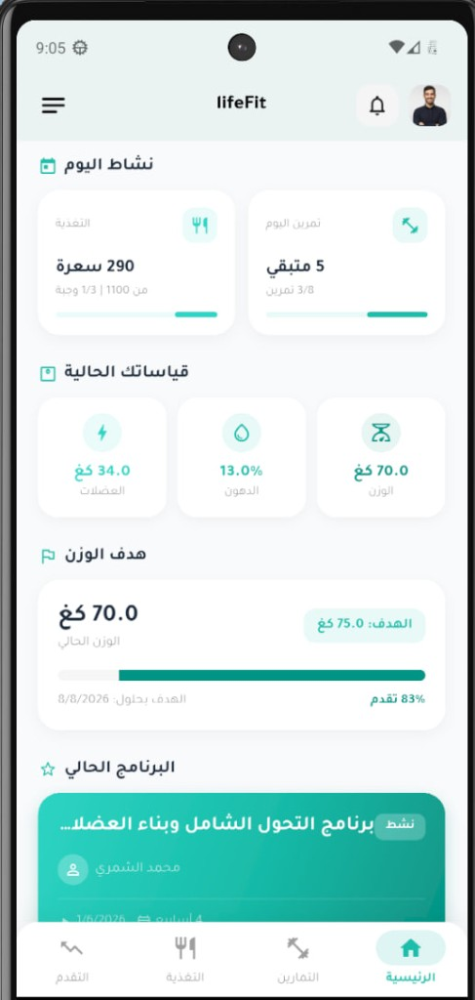
يعتمد المستخدمون والمختصون غالبًا على أدوات تقليدية منفصلة وغير مترابطة:
الخطط تُرسل عبر WhatsApp أو Telegram كرسائل وملفات PDF.
متابعة التقدم عبر صور ورسائل دون نظام واضح.
غياب لوحة لعرض القياسات والنتائج بشكل منظم.
عدم وجود نظام دفع محلي مدمج وموثوق.
صعوبة الرجوع إلى السجلات والبيانات السابقة.
إعادة العمل نفسه يدويًا لكل عميل على حدة.
لا توجد منصة رقمية موحدة تربط بين العميل والمدرب وأخصائي التغذية داخل بيئة واحدة تدعم إدارة الخطط، تتبع التقدم، التواصل، والدفع المحلي.
منصة رقمية متكاملة لإدارة خدمات اللياقة والتغذية عبر تطبيق موبايل للعملاء ولوحة تحكم ويب للمختصين والإدارة.
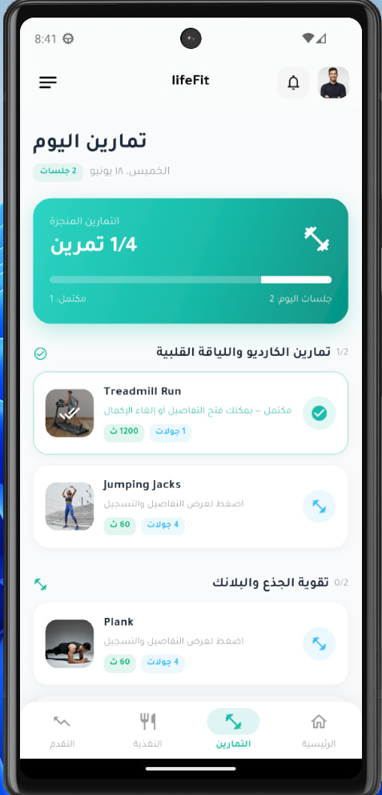
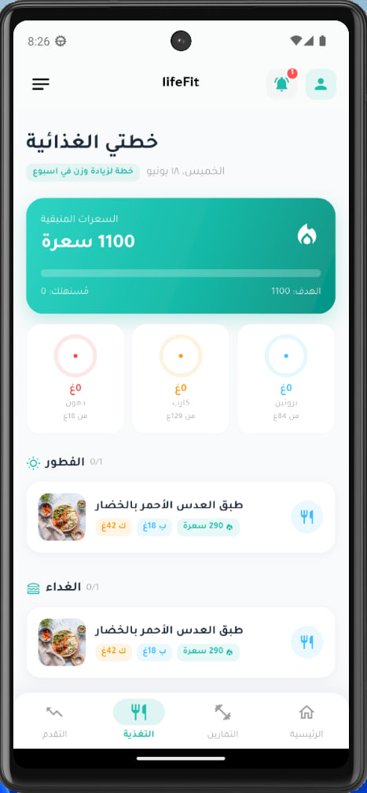
الاشتراك، عرض الخطط اليومية، تسجيل التمارين والوجبات، رفع القياسات والصور، ومتابعة المؤشرات.
إنشاء مكتبة تمارين، بناء برامج تدريبية، جدولة التمارين، ومتابعة أداء العميل.
إنشاء مكتبة أغذية ووجبات، بناء برامج غذائية، ومراجعة السعرات والماكروز اليومية.
إدارة المستخدمين، مراقبة المدفوعات والاشتراكات، إدارة المحتوى، ومتابعة طلبات السحب.
تصميم قائم على الأدوار (Role-Based) يمنح كل مستخدم صلاحيات ووظائف محددة — تنظيم أعلى، أمان أكبر، وقابلية للتوسع.
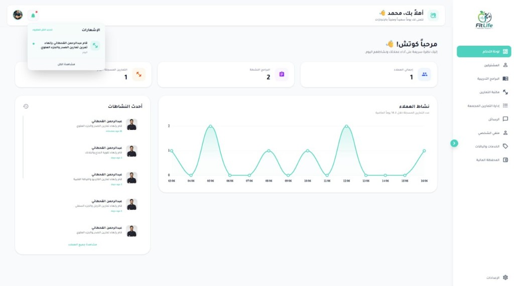
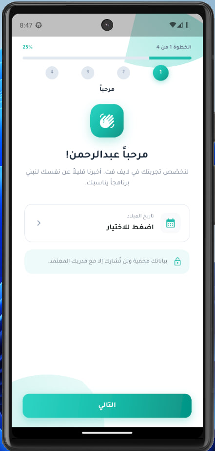
| المكوّن | التقنية | سبب الاستخدام |
|---|---|---|
| الواجهة الخلفية | Laravel / PHP | بناء API، المصادقة، منطق النظام، وقاعدة البيانات |
| لوحة التحكم | Vue.js / TypeScript | واجهات تفاعلية وسهلة الصيانة |
| تطبيق الهاتف | Flutter / Dart | تطبيق متعدد المنصات بأداء جيد |
| قاعدة البيانات | MySQL | تخزين منظم للبيانات العلائقية |
| الخدمات الداعمة | Firebase | الإشعارات وبعض خدمات التطبيق |
| الدفع المحلي | Moamalat | تمكين المستخدم من الدفع بطرق محلية |
فصل واضح للمكونات: كل جزء له مسؤولية محددة، والتواصل بينها يتم عبر API.
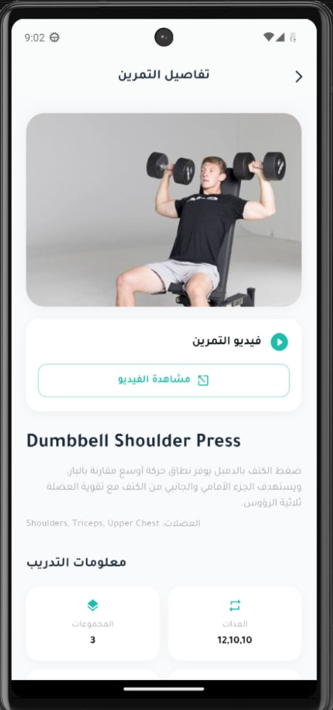
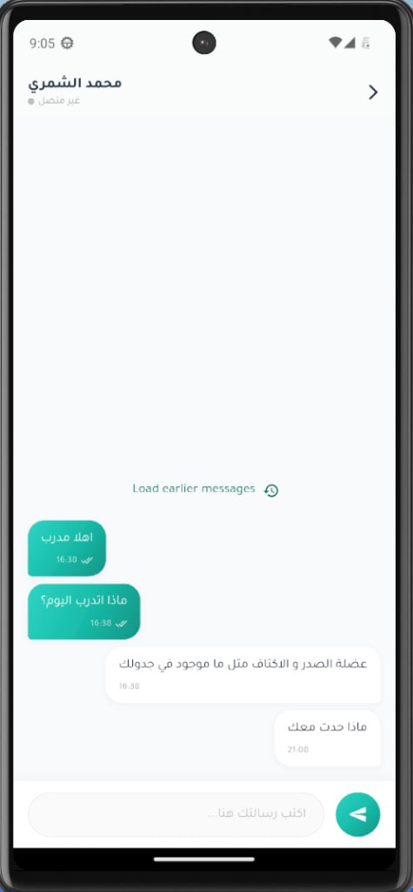
جدول التمارين · تفاصيل التمرين · الخطة الغذائية والسعرات · المحادثة مع المختص — تصميم بسيط يدعم العربية بالكامل.
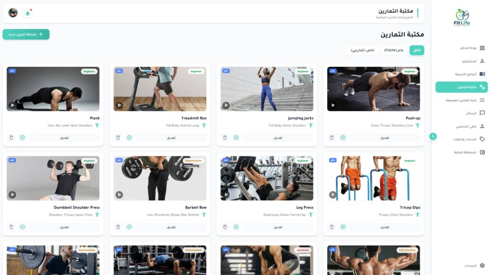
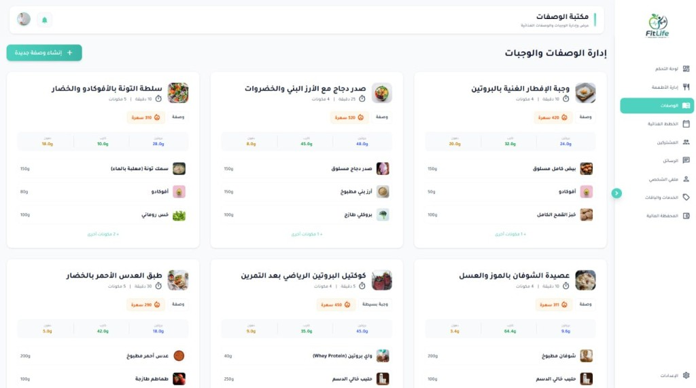
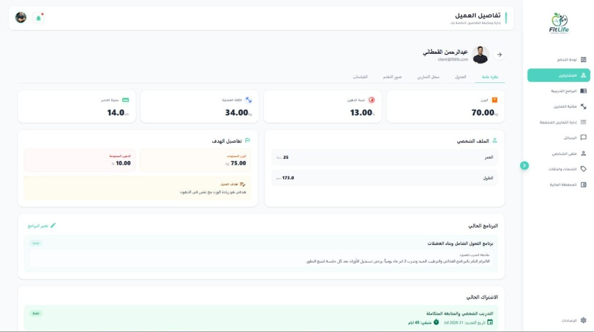
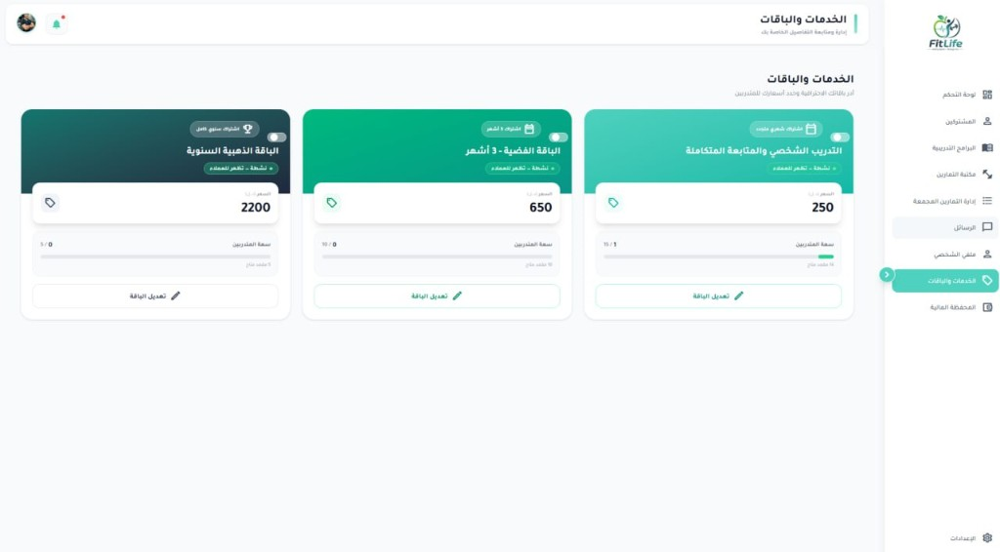
استجابة سريعة للعمليات الأساسية.
حماية البيانات الصحية، تشفير كلمات المرور، ومنع الوصول غير المصرح به.
واجهات واضحة ومتناسقة بدعم كامل للغة العربية.
العمل على الهواتف والمتصفحات الحديثة.
الحفاظ على التوفر مع دعم النسخ الاحتياطي.
استيعاب زيادة المستخدمين والبيانات مستقبلًا.
متطلبات المشروع كانت واضحة من البداية، والنموذج مناسب لمشاريع التخرج، يوفر تسلسلًا منظمًا للمراحل، ويسمح بالرجوع المحدود للمراحل السابقة عند الحاجة للتصحيح.
نظام توصيات بالذكاء الاصطناعي للتمارين والوجبات.
تذكيرات تكيّفية حسب سلوك المستخدم.
تحليل أعمق للتقدم الصحي وتقارير للإدارة.
تقييم المدربين وأخصائيي التغذية.
ربط النظام بالساعات وأجهزة التتبع.
توسيع خيارات الدفع المحلية والعالمية.
منصة رقمية متكاملة تربط العملاء والمدربين وأخصائيي التغذية والإدارة داخل نظام واحد منظم.
شكرًا لاستماعكم — أسئلتكم ومناقشتكم محل ترحيب 🌿